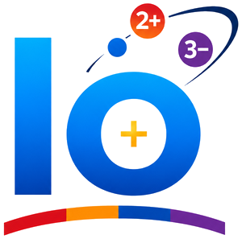

Nueve hojas de repaso rápido: el átomo, tabla periódica, enlace químico, nomenclatura, reacciones, ácidos y pH, gases, soluciones y estequiometría. Léelas aquí, imprímelas o descárgalas en PDF para estudiar sin conexión.

Las 9 funciones químicas, los tres sistemas de nomenclatura, prefijos y sufijos y las excepciones más comunes.
Cada compuesto inorgánico se arma combinando un catión (siempre primero) con un anión (siempre segundo). El color del anión te dice qué tipo de compuesto estás nombrando:
Tres sistemas nombran el mismo compuesto de forma distinta: Tradicional (sufijos -oso/-ico), Stock (número romano entre paréntesis) y Sistemática/IUPAC (prefijos mono-/di-/tri-…). Los tres son correctos; el examen o el ejercicio te dice cuál usar.
Para cada función: cómo se combinan las valencias para armar la fórmula, y el patrón general (no solo un ejemplo) de cada sistema de nomenclatura.
| Tradicional | óxido + sufijo del metal (-oso/-ico) | óxido férrico |
| Stock | óxido de + metal (valencia en romano) | óxido de hierro (III) |
| Sistemática | prefijo+óxido de prefijo+metal | trióxido de dihierro |
Fe³⁺ + O²⁻ → Fe₂O₃| Tradicional | anhídrido + sufijo del no metal (-oso/-ico) | anhídrido sulfúrico |
| Stock | óxido de + no metal (valencia en romano) | óxido de azufre (VI) |
| Sistemática | prefijo+óxido de prefijo+no metal | trióxido de azufre |
S⁶⁺ + O²⁻ → SO₃| Tradicional | hidruro + sufijo o "de" + metal (si es valencia fija) | hidruro de calcio |
| Stock | hidruro de + metal (valencia en romano) | hidruro de calcio |
| Sistemática | prefijo+hidruro de metal | dihidruro de calcio |
Ca²⁺ + H⁻ → CaH₂| Disuelto en agua | ácido + no metal+hídrico | ácido clorhídrico (HCl(aq)) |
| Puro / gas | no metal+uro de hidrógeno | cloruro de hidrógeno (HCl(g)) |
H⁺ + Cl⁻ → HCl| Tradicional | hidróxido + sufijo del metal (-oso/-ico) | hidróxido férrico |
| Stock | hidróxido de + metal (valencia en romano) | hidróxido de hierro (III) |
| Sistemática | prefijo+hidróxido de metal | trihidróxido de hierro |
Fe³⁺ + OH⁻ → Fe(OH)₃| Tradicional | ácido + sufijo del no metal (-oso/-ico, con hipo-/per- si tiene 4 valencias) | ácido sulfúrico |
| Sistemática | prefijo+oxo+prefijo+no metal+ato (valencia) de hidrógeno | tetraoxosulfato (VI) de hidrógeno |
SO₃ + H₂O → H₂SO₄| Tradicional | no metal+uro + sufijo del metal (-oso/-ico) | sulfuro férrico |
| Stock | no metal+uro de metal (valencia en romano) | sulfuro de hierro (III) |
| Sistemática | prefijo+no metal+uro de prefijo+metal | trisulfuro de dihierro |
Fe³⁺ + S²⁻ → Fe₂S₃| Tradicional | oxoanión + sufijo del metal (-oso/-ico) | sulfato férrico |
| Stock | oxoanión de metal (valencia en romano) | sulfato de hierro (III) |
| Sistemática | (bis/tris/tetrakis+)oxoanión de prefijo+metal | tris(tetraoxosulfato) de dihierro |
Fe³⁺ + SO₄²⁻ → Fe₂(SO₄)₃| Tradicional | bi+oxoanión de metal | bicarbonato de sodio |
| Stock/Sistemática | hidrógeno(oxoanión) de metal | hidrogenocarbonato de sodio |
Na⁺ + HCO₃⁻ → NaHCO₃Varios elementos no usan su nombre común para armar el nombre Tradicional o Sistemático: usan una raíz latina distinta. Por eso "azufre" se convierte en sulfur- (sulfuro, sulfúrico, sulfato) y no en "azufruro". Estas son las raíces que más aparecen en 10°-11°:
| Elemento | Símbolo | Raíz | Ejemplos |
|---|---|---|---|
| Azufre | S | sulfur- | sulfuro, ácido sulfúrico/sulfuroso, sulfato/sulfito |
| Nitrógeno | N | nitr- | ácido nítrico/nitroso, nitrato/nitrito |
| Fósforo | P | fosf- | ácido fosfórico/fosforoso, fosfato/fosfito |
| Carbono | C | carbon- | ácido carbónico, carbonato, bicarbonato |
| Silicio | Si | silic- | ácido silícico, silicato |
| Cloro / Bromo / Yodo | Cl / Br / I | clor- / brom- / yod- | clorato, bromato, yodato (pierden la "o" final) |
| Arsénico | As | arséni- | ácido arsénico/arsenioso, arseniato/arsenito |
| Hierro | Fe | ferr- | ferroso / férrico |
| Cobre | Cu | cupr- | cuproso / cúprico |
| Estaño | Sn | estann- | estannoso / estánnico |
| Plomo | Pb | plumb- | plumboso / plúmbico |
| Oro | Au | aur- | auroso / áurico |
| Mercurio | Hg | mercur- | mercurioso / mercúrico |
| Manganeso | Mn | mangan- | manganoso / mangánico, manganato / permanganato |
| Oxígeno | O | ox- | óxido |
| Hidrógeno | H | hidr- | hídrico, hidróxido, hidruro |
Los metales de valencia fija que no cambian de raíz (Na, K, Li, Ca, Mg, Ba, Zn, Al, Ag) usan su nombre común directamente: "cloruro de sodio", no "cloruro sódico" en Stock/Sistemática (el sufijo "-ico" fijo sí existe en Tradicional para algunos, pero no lleva número romano por no ser variable).
| Valencia | Sufijo | Ejemplo (Fe: +2 / +3) |
|---|---|---|
| Menor | -oso | Fe²⁺ → ferroso (óxido ferroso) |
| Mayor | -ico | Fe³⁺ → férrico (óxido férrico) |
| EO | Ácido | Oxoanión |
|---|---|---|
| Más bajo | hipo-…-oso (hipocloroso) | hipo-…-ito (hipoclorito) |
| Bajo | …-oso (cloroso) | …-ito (clorito) |
| Alto | …-ico (clórico) | …-ato (clorato) |
| Más alto | per-…-ico (perclórico) | per-…-ato (perclorato) |
Metales de valencia fija (no llevan sufijo ni número romano): Na, K, Li, Ag⁺¹ · Ca, Mg, Ba, Zn⁺² · Al⁺³.
| 1 | 2 | 3 | 4 | 5 | 6 |
|---|---|---|---|---|---|
mono- | di- | tri- | tetra- | penta- | hexa- |
Cuenta los átomos de cada elemento en la fórmula y antepón el prefijo (el "mono-" del catión suele omitirse). Nunca mezcles prefijos de Sistemática con sufijos de Tradicional o números romanos de Stock — es el error más común en exámenes.
Cuando el oxoanión necesita un prefijo compuesto (2 o más unidades de un anión ya complejo), se usan en su lugar: bis- (2), tris- (3), tetrakis- (4), pentakis- (5) — así se evita la ambigüedad. Ejemplo: Fe₂(SO₄)₃ → tris(tetraoxosulfato) de dihierro.
Agrupados como en la tabla periódica: ámbar = metales (cationes), azul = no metales (aniones). Los números son los estados de oxidación que más aparecen en 10°-11°.
+1 — fija+2 — fija+1 · Zn +2 · Al +3+2/+3 · Cu +1/+2 · Sn +2/+4 · Pb +2/+4+2/+3/+6 · Mn +2/+3/+4/+6/+7 · Hg +1/+2-1 (solo) · Cl, Br, I: -1 como anión; +1/+3/+5/+7 en oxoácidos-2 (solo) · S, Se, Te: -2 como anión; +4/+6 en oxoácidos-3 como anión; +3/+5 en oxoácidos+2/+4/-4 · Si +4Los metales de transición variable no se "adivinan": el estado de oxidación se calcula igualando a cero la suma de cargas del compuesto (ver Excepciones más abajo para Mn, Cr y Hg).
Con +2, +3 y +4 la Tradicional solo alcanza para dos (manganoso/mangánico); el +3 no tiene nombre Tradicional y exige Stock: óxido de manganeso (III). Con +6 y +7 solo existe como oxoanión: manganato / permanganato de potasio.
Cr²⁺/Cr³⁺ forman óxidos básicos normales. En +6, el Cr se comporta como no metal: CrO₃ es un anhídrido (no un óxido básico) y forma ácido crómico, cromato (CrO₄²⁻) y dicromato (Cr₂O₇²⁻).
El ion mercurioso es Hg₂²⁺ (dos átomos de Hg unidos, EO +1 cada uno), nunca "Hg⁺" suelto. Hg₂Cl₂ = cloruro mercurioso; HgCl₂ (con Hg²⁺) = cloruro mercúrico.
En estado puro/gaseoso (sin agua): haluro de hidrógeno (HCl(g) = cloruro de hidrógeno). Disuelto en agua: ácido …hídrico (HCl(aq) = ácido clorhídrico). Ojo con la "h" intercalada: clorhídrico, sulfhídrico, no "cloridrico".
Metálico (H⁻, metal + H, ej. CaH₂) · No metálico gaseoso (H⁺ + no metal, en fase gas, ej. HCl(g) = cloruro de hidrógeno) · No metálico acuoso / ácido hídrico (el mismo gas disuelto en agua, ej. HCl(aq) = ácido clorhídrico). El estado físico cambia el nombre aunque la fórmula sea la misma.
Cuando un ácido con 2 o más hidrógenos ionizables (poliprótico) solo cede parte de ellos al neutralizarse, el anión que queda conserva hidrógeno y se nombra con el prefijo bi- (Tradicional) o hidrógeno- (Stock/Sistemática).
| Fórmula | Tradicional | Stock / Sistemática |
|---|---|---|
NaHCO₃ | bicarbonato de sodio | hidrogenocarbonato de sodio |
NaHSO₄ | bisulfato de sodio | hidrogenosulfato de sodio |
Na₂HPO₄ | fosfato monoácido de sodio | hidrogenofosfato de sodio |
NaH₂PO₄ | fosfato diácido de sodio | dihidrogenofosfato de sodio |
① Identifica el catión (primer elemento, metal) y si su valencia es fija o variable · ② Identifica el anión por su color/tipo (simple, OH⁻ u oxoanión) · ③ Determina la función con la tabla maestra de arriba · ④ Aplica las reglas del sistema pedido (Tradicional, Stock o Sistemática) sin mezclarlas entre sí.
La ruta de gramos de A a gramos de B, las fórmulas, el reactivo limitante, el rendimiento y la pureza.
Son tres factores de conversión seguidos: el primero pasa de gramos a moles, el segundo cambia de sustancia con los coeficientes de la ecuación balanceada y el tercero vuelve a gramos.
m = n × MM. La masa molar (MM) sale de sumar las masas atómicas de la fórmula.
Para contar átomos, moléculas o iones. Un mol de H₂O tiene 6,022 × 10²³ moléculas.
Solo a 0 °C y 1 atm. En otras condiciones usa PV = nRT.
Ejemplo: en H₂O, % H = 2,0 ÷ 18,0 × 100 ≈ 11,1 %.
El teórico sale de la estequiometría; el real es lo que se pesó en el laboratorio. Nunca pasa de 100 %.
Primero saca la masa pura (muestra × pureza) y solo entonces calcula moles.
Las siete leyes, cómo escoger cuál usar y los despejes de PV = nRT.
| Ley | Qué se mantiene constante | Ecuación | Cómo se relacionan |
|---|---|---|---|
| Boyle | n y T | P₁V₁ = P₂V₂ | Inversa: si V baja a la mitad, P se duplica |
| Charles | n y P | V₁ ÷ T₁ = V₂ ÷ T₂ | Directa: más T, más V |
| Gay-Lussac | n y V | P₁ ÷ T₁ = P₂ ÷ T₂ | Directa: más T, más P |
| Avogadro | P y T | V₁ ÷ n₁ = V₂ ÷ n₂ | Directa: más moles, más V |
| Combinada | n | P₁V₁ ÷ T₁ = P₂V₂ ÷ T₂ | Cuando cambian P, V y T a la vez |
| Gas ideal | Una sola condición | PV = nRT | Con ella se despejan P, V, n o T |
| Dalton | Mezcla de gases | P total = P₁ + P₂ + … | Pi = Xi × P total (X = fracción molar) |
Con m = masa del gas en gramos.
Un gas más denso que el aire (MM > 29 g/mol) se queda abajo.
Unidades de concentración, preparar, diluir, mezclar, titular y solubilidad.
| Unidad | Fórmula | Pista para recordarla |
|---|---|---|
| % m/m | g soluto ÷ g solución × 100 | Ambos en masa |
| % m/v | g soluto ÷ mL solución × 100 | Suero: 0,9 % = 0,9 g en 100 mL |
| % v/v | mL soluto ÷ mL solución × 100 | Alcohol antiséptico 70 % v/v |
| ppm | mg soluto ÷ L solución | En agua, 1 ppm = 1 mg/L |
| Molaridad M | mol soluto ÷ L solución | Litros de solución (no de solvente) |
| Molalidad m | mol soluto ÷ kg solvente | Kilogramos de solvente; no cambia con la temperatura |
| Fracción molar X | mol componente ÷ mol totales | La suma de todas las X es 1 |
| Normalidad N | N = M × (H⁺ u OH⁻ que aporta) | H₂SO₄ 1 M = 2 N |
| Tipo de solución | Qué pasa si agregas más soluto |
|---|---|
| Insaturada | Todavía se disuelve |
| Saturada | Ya no se disuelve: queda en el fondo |
| Sobresaturada | Inestable: basta un golpe o un cristalito para que el exceso cristalice |
La solubilidad de la mayoría de los sólidos aumenta con la temperatura; la de los gases disminuye (por eso una gaseosa tibia pierde el gas). Semejante disuelve a semejante: lo polar se disuelve en agua; lo apolar, en solventes apolares.
Gramos que se pesan para preparar V litros de solución de molaridad M.
Los moles de soluto no cambian al agregar agua. V₁ es el volumen de la solución concentrada que hay que tomar.
Un 0,9 % m/v de NaCl (MM = 58,5) da 0,9 × 10 ÷ 58,5 ≈ 0,15 M.
1000 L de agua con 1,5 ppm de cloro contienen 1500 mg (1,5 g).
Suma los moles de cada una y divide entre el volumen total.
En el punto de equivalencia, los equivalentes de ácido y de base son iguales. Con ácido y base monopróticos, M = N.
Historia de los modelos atómicos, partes del átomo, los números A, Z y n⁰ y la configuración electrónica.
| Año | Científico y modelo | Qué propuso | Qué lo apoyó | Qué no pudo explicar |
|---|---|---|---|---|
| 1808 | Dalton «bola de billar» | Átomos indivisibles; los de un elemento son iguales; en una reacción solo se reorganizan. | Leyes de conservación de la masa y de las proporciones definidas. | El átomo sí se divide (electrón) y existen isótopos. |
| 1897 | Thomson «budín de pasas» | Esfera positiva con electrones incrustados; neutra en total. | Tubo de rayos catódicos: descubrió el electrón. | Los rebotes de partículas alfa en la lámina de oro. |
| 1911 | Rutherford nuclear | Núcleo diminuto, denso y positivo; electrones alrededor; casi todo es espacio vacío. | Lámina de oro (Geiger y Marsden). En 1919 identificó el protón. | Un electrón en órbita perdería energía y caería al núcleo; no explica los colores que emite cada elemento. |
| 1913 | Bohr niveles de energía | Electrones en órbitas con energía fija (n = 1, 2, 3…); al saltar emiten o absorben un fotón exacto. | Espectro de líneas del hidrógeno. | Solo funciona bien con un electrón; supone órbitas definidas. |
| 1926 | Schrödinger, Heisenberg, de Broglie cuántico (actual) | El electrón es onda y solo se conoce la probabilidad de hallarlo en un orbital (s, p, d, f). | Difracción de electrones y espectros de átomos grandes. En 1932 Chadwick descubrió el neutrón. | Es el modelo vigente. |
| Partícula | Carga | Masa | Dónde está | Descubrimiento |
|---|---|---|---|---|
| Protón p⁺ | +1 | 1 u | Núcleo | Rutherford, 1919 |
| Neutrón n⁰ | 0 | 1 u | Núcleo | Chadwick, 1932 |
| Electrón e⁻ | −1 | ≈ 1/1836 u | Corteza (nube) | Thomson, 1897 |
El núcleo (protones y neutrones, los nucleones) concentra casi toda la masa y es diminuto; la corteza es casi espacio vacío. Un átomo neutro tiene igual número de protones y de electrones. 1 u = unidad de masa atómica.
Cómo usarlo: sigue la flecha en zigzag: cada línea baja de arriba-derecha a abajo-izquierda y al terminar da la vuelta y empieza la siguiente. El número sobre cada círculo es el máximo de electrones.
Cómo se escribe: el símbolo X con A arriba a la izquierda, Z abajo a la izquierda y la carga arriba a la derecha (solo si es un ion). Ejemplo: ³⁵₁₇Cl.
Define el elemento: Z = 6 siempre es carbono.
Protones más neutrones.
Se despejan de los otros dos.
Catión: menos e⁻. Anión: más e⁻.
Isótopos: mismo Z y distinto A (¹²C y ¹⁴C). Isóbaros: mismo A y distinto Z. Isótonos: mismo número de neutrones.
Se llenan primero los subniveles de menor energía. Ojo: el 4s se llena antes que el 3d.
Cada orbital admite máximo 2 electrones, con espines opuestos (↑↓).
En orbitales de igual energía, primero un electrón en cada uno y luego se aparean.
| Subnivel | s | p | d | f |
|---|---|---|---|---|
| Orbitales | 1 | 3 | 5 | 7 |
| Máx. electrones | 2 | 6 | 10 | 14 |
| Número | Qué indica | Valores |
|---|---|---|
| n | Nivel de energía (tamaño) | 1, 2, 3, … |
| l | Subnivel (forma) | 0 a n − 1 (0 = s, 1 = p, 2 = d, 3 = f) |
| ml | Orbital (orientación) | de −l a +l |
| ms | Espín del electrón | +½ o −½ |
Aquí n es el nivel de energía, no el número de neutrones (n⁰). Dos electrones de un mismo átomo nunca tienen los cuatro números iguales.
Cómo se organiza la tabla, las familias principales y las tendencias de radio, energía de ionización y electronegatividad.
| Dato | Cómo se lee | Ejemplo: Cl (Z = 17) |
|---|---|---|
| Periodo | Nivel de energía más alto con electrones | 3s² 3p⁵ → periodo 3 |
| Bloque | Subnivel donde entra el último electrón (s, p, d o f) | Termina en 3p⁵ → bloque p |
| Grupo (1, 2) | Número de electrones de valencia | — |
| Grupo (13 a 18) | 10 + electrones s + p del último nivel | 10 + 2 + 5 = 17 |
| Valencia | Electrones del último nivel | 7 e⁻ de valencia |
| Grupo | Familia | e⁻ val. | Rasgos |
|---|---|---|---|
| 1 | Alcalinos (Li, Na, K) | 1 | Blandos, muy reactivos con el agua; forman iones +1 |
| 2 | Alcalinotérreos (Mg, Ca) | 2 | Reactivos; forman iones +2 |
| 3 a 12 | Metales de transición (Fe, Cu, Zn) | varía | Duros, conducen bien, varios estados de oxidación |
| 17 | Halógenos (F, Cl, Br, I) | 7 | No metales muy reactivos; forman iones −1 |
| 18 | Gases nobles (He, Ne, Ar) | 8 (He: 2) | Casi inertes: capa de valencia completa |
| Propiedad | Hacia abajo en un grupo | Hacia la derecha en un periodo |
|---|---|---|
| Radio atómico | Aumenta (más niveles) | Disminuye (más carga nuclear) |
| Energía de ionización | Disminuye | Aumenta |
| Electronegatividad | Disminuye | Aumenta |
| Carácter metálico | Aumenta | Disminuye |
Regla del octeto, estructuras de Lewis, los tres tipos de enlace, polaridad y cómo decidir cuál se forma.
Los puntos azules son pares libres; cada línea es un par compartido (un enlace). El agua tiene 2 pares libres, el amoníaco 1, el CO₂ tiene dos enlaces dobles y el N₂ un enlace triple.
| Pareja | ΔEN | Enlace |
|---|---|---|
| Cl−Cl | 0,0 | Covalente apolar |
| H−O | 1,4 | Covalente polar |
| Na−Cl | 2,1 | Iónico |
| Iónico | Covalente | Metálico | |
|---|---|---|---|
| Se forma | El metal cede e⁻ al no metal | Se comparten pares de e⁻ | Mar de e⁻ libres entre cationes |
| Entre | Metal + no metal | No metal + no metal | Metal + metal |
| Estado | Sólido cristalino | Gas, líquido o sólido | Sólido (casi todos) |
| Punto de fusión | Alto (NaCl: 801 °C) | Bajo (H₂O: 0 °C) | Varía (Fe alto, Hg líquido) |
| Conduce | Fundido o disuelto | No (salvo grafito) | Sí, sólido y fundido |
| Al golpearlo | Frágil | Blando o quebradizo | Maleable y dúctil |
| Ejemplos | NaCl, CaO, MgO | H₂O, CO₂, O₂ | Cu, Fe, Al |
Los seis tipos de reacción, cómo balancear (tanteo, algebraico y redox) y reglas de reactividad y solubilidad.
| Tipo | Patrón | Ejemplo balanceado | Cómo reconocerla |
|---|---|---|---|
| Síntesis | A + B → AB | 2 H₂ + O₂ → 2 H₂O | Varios reactivos, un solo producto |
| Descomposición | AB → A + B | CaCO₃ → CaO + CO₂ | Un solo reactivo, varios productos |
| Sustitución simple | A + BC → AC + B | Zn + 2 HCl → ZnCl₂ + H₂↑ | Un elemento libre desplaza a otro |
| Sustitución doble | AB + CD → AD + CB | AgNO₃ + NaCl → AgCl↓ + NaNO₃ | Dos compuestos intercambian iones |
| Combustión | Combustible + O₂ → CO₂ + H₂O | CH₄ + 2 O₂ → CO₂ + 2 H₂O | Oxígeno y calor; productos CO₂ y H₂O |
| Neutralización | Ácido + base → sal + agua | HCl + NaOH → NaCl + H₂O | pH final cerca de 7 |
| Oxidación | Reducción | |
|---|---|---|
| Electrones | Pierde e⁻ | Gana e⁻ |
| Número de oxidación | Aumenta | Disminuye |
| Papel | Agente reductor | Agente oxidante |
Teorías ácido-base, escala de pH, cálculos, ácidos y bases fuertes y débiles, neutralización e indicadores.
| Teoría | Ácido | Base | Ejemplo |
|---|---|---|---|
| Arrhenius (1887) | En agua libera H⁺ | En agua libera OH⁻ | HCl → H⁺ + Cl⁻ · NaOH → Na⁺ + OH⁻ |
| Brønsted-Lowry (1923) | Dona un H⁺ | Acepta un H⁺ | NH₃ + H₂O ⇌ NH₄⁺ + OH⁻ |
Si [H⁺] = 10⁻³ M, pH = 3.
pH 5 → [H⁺] = 10⁻⁵ M.
pH = 14 − pOH.
pH 3 tiene 100 veces más H⁺ que pH 5.
| Fuertes (ionizan casi 100 %) | Débiles (ionizan poco) | |
|---|---|---|
| Ácidos | HCl, HBr, HI, HNO₃, H₂SO₄, HClO₄ | CH₃COOH (vinagre), H₂CO₃, HF |
| Bases | NaOH, KOH, Ca(OH)₂, Ba(OH)₂ | NH₃ (amoníaco), aminas |
Para un ácido o base fuerte, [H⁺] o [OH⁻] es igual a su concentración (por el número de H⁺ u OH⁻ que aporta). Para uno débil se necesita su constante de ionización.
En el punto de equivalencia los equivalentes de ácido y de base son iguales. Con ácido y base monopróticos, M = N. El indicador debe cambiar de color cerca del pH de la equivalencia.
| Indicador | Zona de viraje | Colores |
|---|---|---|
| Anaranjado de metilo | pH 3,1 a 4,4 | Rojo → amarillo |
| Azul de bromotimol | pH 6,0 a 7,6 | Amarillo → azul |
| Fenolftaleína | pH 8,2 a 10 | Incolora → fucsia |
| Repollo morado | Casero | Rojo (ácido) → verde o amarillo (base) |
| Papel tornasol | — | Rojo (ácido) · azul (base) |